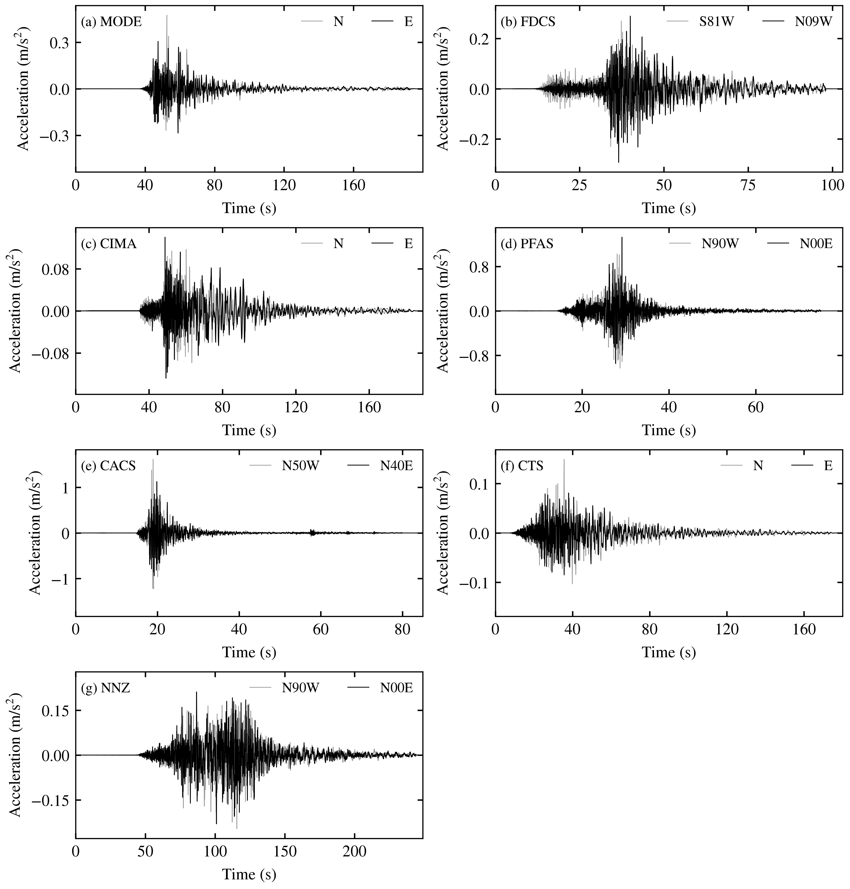
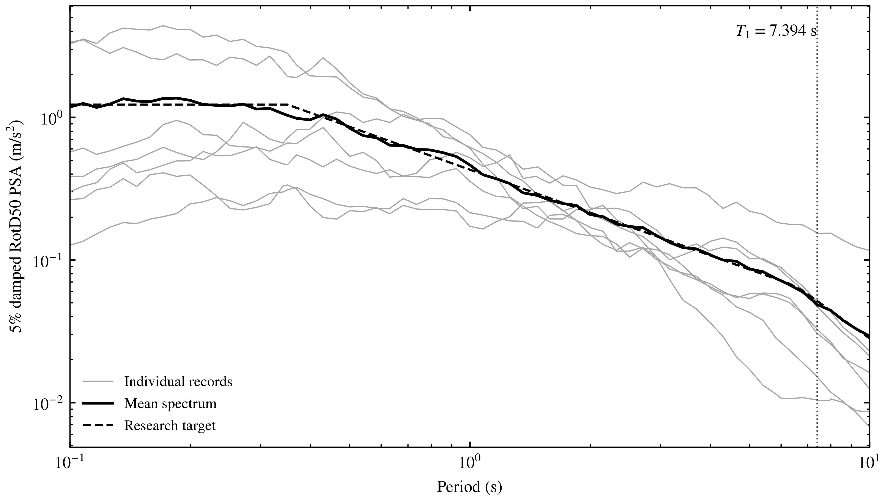
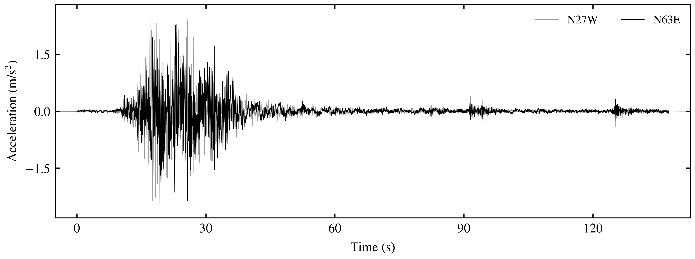
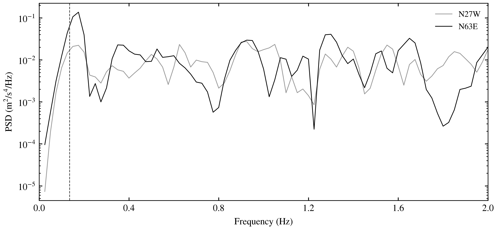

地震动 · 期刊制图
2026-11-24 · T079 · 七张真实计算图件 · 600 dpi PNG / SVG / PDF
研究状态：V7为备用七波组，DSLC为已核实的文献同源原波样稿。两组分开展示，未将备用数据冒充文献指定的七条地震动。
一、七组地震动组合图（备用波组）
图1 七组地震动加速度时程

图2 七组地震动功率谱密度

图3 七组地震动反应谱与研究目标谱

二、DSLC文献同源地震动
图4 DSLC双水平加速度时程

图5 DSLC功率谱密度

图6 DSLC加速度反应谱

图7 DSLC N63E加速度、速度和位移时程

三、数据来源与计算证据
V7：ESM v3 / GeoNet NZSMDB；逐个调幅数据CSV SHA256核验。DSLC：GeoNet校正V2A实测记录。采用原始或已明确调幅的完整时程，未伪造地震数据。
实际计算运行：RUN45381499918 · SHA256核验清单 · 研发白皮书 · 制图源代码
研究归档 ef91754b329de13b8899a74f62d65623f63bf9cd；所有图件及数值直接保存在本工作室GitHub仓库中。